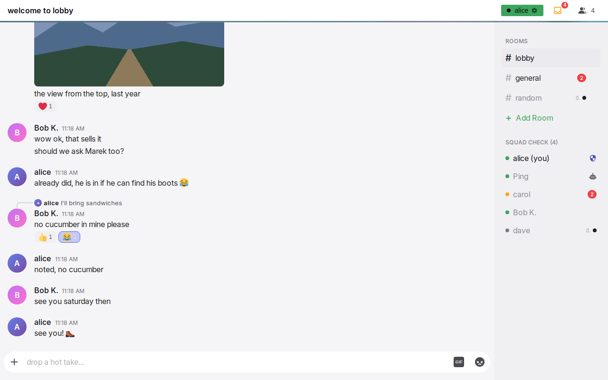
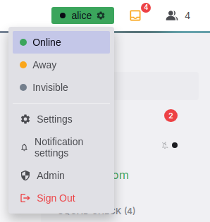
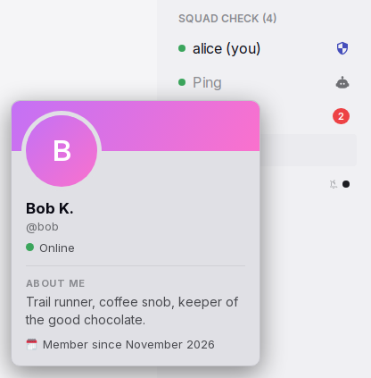
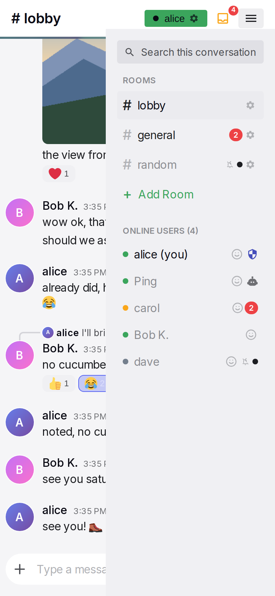

Header, sidebar and overlays
The frame contains all parts around a conversation. The header shows the title, the user's status chip and the people control. The sidebar shows the rooms and the people. Other parts appear over the page: the status menu, the profile card, the connection state, the notice strip, the install and notification prompts, and the error screen. The frame is the same on every conversation page and on Settings.
Anatomy




- Header. One row with the title area on the left. On a desktop the pin button follows the title when the conversation has pinned messages. On the right are the status chip, on a narrow window the pin button, the mailbox when there are unread messages, and the search field. At 768 px or less a hamburger stands in the place of the search field. Below the header is a 3 px line, turquoise in rooms and purple in direct messages.
- Title area. In a room, a title from the configured list, built from the room name. In a direct message, a back arrow and the partner's small avatar and name. On Settings, a back arrow and "Settings".
- Status chip. A small coloured chip with a dot, the user's display name and a gear. Its colour shows the user's current status. It opens the status menu.
- Mailbox. A tray icon with a red count of unread messages. It shows only when the count is above zero.
- Hamburger. At 768 px or less, a button that opens the sidebar. Above 768 px the sidebar needs no button, and the header has the search field in this place.
- Connection dot. A small dot at the left of the header controls, before the status chip. It shows only while the connection is not normal.
- Sidebar. A panel on the right, 240 px wide on desktop. It contains the section "ROOMS" with every room, then the people section. The people section has a title from the configured list and the online count.
- Notice strip. A one-line strip between the header line and the conversation. It shows only for a lasting state that needs an action from the user: a new version, or a sign-in.
- Overlays. The status menu, the pinned messages panel, the profile card, the notification prompt, the install dialog and the error screen.
Rules
Layout
SH-01The chat screen fills the window. The screen as a whole never scrolls. The header is at the top, with the header line below it. Below the line, the conversation is on the left and the sidebar is on the right.
SH-02Above 768 px, the sidebar is visible and 240 px wide, except while the results of a search have its place (SR-20). At 768 px or less, the sidebar slides in from the right over the conversation. The header then shows a hamburger.
SH-03The frame uses a 768 px width tier and the compact components use a 600 px tier. The two tiers are intentionally different. A window between 601 and 768 px has the slide-in sidebar with desktop components.
SH-04The theme's background pattern shows only behind the messages. It never shows behind the header or the sidebar. A room and a direct message can have a different pattern and tint. Status colours never change with the theme context.
Header
SH-05In a room, the title is one text from the configured room header list, with the room name inserted. The text is picked when the conversation opens. It stays until the user leaves the conversation. The fallback is "# {room}".
SH-06In a direct message, the title area shows a back arrow, the partner's 24 px avatar and the partner's display name. When the partner has no display name, it shows the username. The back arrow goes to the lobby at every width.
SH-07On Settings, the title area shows a back arrow and "Settings". Channel settings show "#{room} Settings". A new channel shows "New Channel".
SH-08At 768 px or less, the header has a hamburger that opens the sidebar. Above 768 px the header has no button for the sidebar, and the search field stands in that place (SR-19). The number of people online is in the title of the people section (SH-28). Why: above 768 px the sidebar needs no button to show, so a button for it has nothing to do.
SH-09The mailbox is a tray icon with a red count. It shows only while the total unread count is above zero. Its tooltip is "{n} unread messages". The total is the sum of the counts in the sidebar, and does not include the open conversation. On narrow screens, a tap on the mailbox opens the sidebar. Above 768 px, a click on the mailbox during a search ends the search, so the sidebar shows with its unread marks (SR-22). See Notifications and unread.
SH-10At 600 px or less, the header has more padding, a larger title and a shorter chip name. The gaps between the header controls are 4 px, and the hamburger is narrower. At every width, a long title ends with an ellipsis 8 px before the first control.
Status chip and menu
SH-11The chip shows a dot, the user's display name and a gear. Its colour shows the user's current status. The colour is green for online, orange for away and grey for invisible. An automatic away changes the colour. It does not change the chosen status.
SH-12A tap on the chip opens the menu below the chip. The menu items are "Online", "Away", "Invisible", a divider, "Settings", "Notification settings", "Admin" for admins, and "Sign Out" in red. The chosen status is highlighted. A second tap on the chip, a tap outside the menu, or Escape closes the menu. Settings opens the Settings page. Notification settings opens the notification section of that page. Admin opens the administration page, which has its own back arrow.
SH-13A status pick applies immediately and closes the menu. Without a connection, the three status items are dimmed and do nothing. See Presence.
SH-14"Notification settings" shows a crossed bell while the user's server-wide mute is on. This makes the mute visible from every page.
SH-15Sign Out ends only the session on this device. Other devices stay signed in. When the account has no login link (and no retired secret code, AU-13), a confirmation says what is left: smart login from the same network for 14 days, when it is on, and a new link from an admin. The only admin has nobody to ask. When this device has unsent messages, a confirmation warns that these messages are lost. Both are Yap's own dialogs in the theme, like the delete dialog (MR-65), never the browser's. A sign-out removes the notification subscription and the local data of the device. See Sign-in and sessions.
Connection state
SH-16While the connection is normal, the header shows no connection indicator.
SH-17While Yap connects or reconnects, a pulsing orange dot shows before the status chip. The header line also pulses orange. Without a connection, the dot is a grey ring and the header line is dimmed. When the user must do an action, the dot is red and the notice strip tells the user what to do. With reduced motion, there is no pulse. The chip, the count and the people list keep their last known state until the connection returns.
SH-18On hover or after a tap, a short text bubble shows the meaning of the dot. The texts are "Connecting…", "Reconnecting…", "Offline. Messages are sent when the connection returns.", "Signed out", "Update available". While Yap is disconnected, a tap on the dot also starts a reconnect. The next tap elsewhere closes the bubble.
SH-19During an outage, the conversation stays readable and usable. There is no banner over the page and no modal.
SH-20The notice strip shows only for two lasting states. For a new version, it shows "You are awesome and so is the new version of this app. Please refresh." with a "Reload" button. Yap does not reload an open page by itself; a page that opens later loads fresh (SH-50). When the user is signed out and there is no connection, it shows "Sign in to continue." with a "Sign in" link. When there is a connection, the user goes to the login page instead. The strip has one line and at most one control. While the strip shows, the conversation is shorter.
SH-50While a new version is available, a page that this visit has not opened yet opens as a fresh load of the new version, at the same address. Pages already open keep running until the user reloads. This happens once per version in a tab. Drafts and unsent messages are kept.
Sidebar: rooms
SH-21The sidebar has two sections in this order: "ROOMS", then the people section. Section titles are in small capitals.
SH-22Every user sees every room, in the order that the admin sets. New rooms are added at the bottom. A room row shows "#" and the name. Next, it shows a crossed bell when the user muted that room individually. The bell does not show for the default room mute or under the server-wide mute. Then the row shows an unread mark and, for admins, a gear. The open room is highlighted and shows no unread mark.
SH-23For an unmuted room, the unread mark is a red count. For a muted room, it is a small dot without a number. A mute hides the number. The dot still shows that something arrived. An unmuted room with unread messages has brighter text.
SH-24The gear opens the room's settings. On desktop, the gear appears on hover. On touch screens, it is always visible. Admins also see "Add Room" as the last row.
SH-25An admin-only room is visible to everyone and read-only for non-admins. The lobby cannot be deleted. When a room is created, renamed or deleted elsewhere, the list updates immediately. When the open room is deleted, the user goes to the lobby.
SH-26A tap on a room opens it and closes the sidebar on narrow screens.
SH-27The sidebar scrolls as one area when its content is taller than the screen. A short list shows no scrollbar. On a narrow screen a fade at the bottom edge shows while rows are hidden below it.
Sidebar: people
SH-28The title of the people section is one text from the configured list, with the online count inserted. The fallback is "Online Users ({n})". A new text is picked when the count changes.
SH-29The list contains every person who is online or away. It also contains every person with whom the user exchanged at least one direct message. An invisible person shows only as a direct message partner. That person is grey, the same as an offline person, and is not counted.
SH-30The order is admins, then the bot, then the user, then everyone else. The bot slot and the user slot are used only when that person is not already placed as an admin. Everyone else is in this order: unmuted direct messages with unread first, then people online, then offline people with the most recent direct message first. Within a tier, people with the same rank are in order of display name.
SH-31A row shows a status dot, which is green for online, orange for away and grey otherwise. It also shows the display name, " (you)" on the user's own row, and the info button where SH-34 shows one. Other icons are a shield for admins, a robot for the bot and a crossed bell for a muted direct message. The shield has the accent colour of the theme, and the robot has the colour of muted text. The row also shows the unread mark, with the room rules. Rows show no avatar and no message preview.
SH-32A tap on another person opens the direct message with them and closes the sidebar on narrow screens. A tap on the user's own row, outside the info button, does nothing. The open direct message's row is highlighted.
SH-33The list, its dots, its title and its counts update immediately when a person joins, leaves or changes status, or when an unread count changes.
Profile card
SH-34Above 768 px, when the pointer is on a person's name, the profile card of that person shows next to the pointer. The card closes when the pointer leaves the name. On any touch screen, and at 768 px or less, an info button after the name opens the card. The card is centred over a dimmed page. A second tap on the button, a tap outside, Escape, or a room or person pick closes the card. A tap on the row outside the button opens the direct message. The user's own row opens the user's own card. The card shows the status at the time it opened.
SH-35The card shows a banner in the person's avatar colours, the 80 px avatar, and the display name with the admin shield or the bot robot. It then shows "@username" and a status line "Online", "Away" or "Offline". An invisible person shows as offline. The card then shows "About me" with the bio or "No bio yet — a person of mystery 🕵️", "📍 {location}" when set, and "🗓️ Member since {Month yyyy}". It has no buttons.
Sidebar on phones
SH-36The hamburger or the mailbox opens the sidebar. The sidebar slides in from the right, with its top edge below the header. The conversation stays visible and is not dimmed. The header stays usable.
SH-37The sidebar closes on a tap outside it, on a room or person pick, on the search row (SR-24), on the hamburger, and on any menu item that goes to another page.
Prompts and dialogs
SH-38The notification prompt appears on a chat page when four conditions are all true. Yap runs as an installed app. The browser was not asked yet. The user dismissed the prompt fewer than three times on this device. The server can send notifications. The prompt is a centred card over a dark layer. It shows a bell, "One more step", the explanation, "Enable Notifications" and "Maybe Later". See Notifications and unread.
SH-39"Enable Notifications" asks the browser and then closes the prompt, whatever the answer is. "Maybe Later" counts one dismissal. After three dismissals, the prompt never shows again on this device.
SH-40The "install it" link in the bot's welcome message and "Install Yap" in Settings open the install dialog. The dialog shows "Add {name} to your home screen" with the buttons "Use existing app" and "Install app", where {name} is the server's name. When Yap is installed, it shows "{name} is already installed" with "Close". The add-to-home-screen guide uses the server's name too. "Install app" starts the browser's install or shows the add-to-home-screen guide. See Offline and installation.
SH-41When a page fails, the conversation area shows "Something went wrong" with "Try Again" and "Reload Page". The header and the sidebar stay. Try Again draws the page again. Reload Page reloads the page. Drafts and unsent messages are kept after both actions. When Yap cannot start at all, the gremlin screen shows "Oops! The gremlins got us" with "Reload & Try Again".
SH-51When Yap starts with nothing stored on the device (a first visit, or a visit after a sign-out), the page is empty until the server answers. From 400 ms on, a spinner shows in the middle of the page, until the first page is on screen. A start from the stored copy paints before that and never shows the spinner.
Routes and the tab
SH-42The routes are /lobby for the default room, /room/{id}, /dm/{username}, /settings, /admin, /channel/new, /channel/{id}/settings, /login, /verify/{username}, /invite/{code}, and / for the start. When the user is signed in, a room or direct message link opens directly. When the user is signed out, the login page opens, and the link opens after the sign-in. An unknown address shows "Not Found".
SH-43/ opens the user's last conversation on this device. If there is none, / opens the lobby. /dm/{unknown user}, /dm/{the user themself} and /room/{unknown id} go to the lobby.
SH-44Browser back goes to the previous conversation or page. The header back arrow always goes to the lobby. During a search at 768 px or less, back first goes one step back in the search (SR-27).
SH-45The tab title is "{Project} | #{room}" in a room and "{Project} | @{username}" in a direct message. On the Settings and Admin pages, it is "Settings" and "Admin". Before a page sets it, the tab shows the project name: the server writes it into the page, so the tab never shows "Yap" while the client loads. While the tab is hidden, a "({n}) " prefix counts the arrivals by the rules on the notifications page. The prefix resets when the user returns.
SH-46The installed app's icon shows the unread total as a badge where the system supports it. Yap does not ask for permission for the badge. The badge clears when the total is zero.
Pinned messages
SH-47A pin icon with the count of pins shows when the open conversation has pinned messages. On a desktop it follows the title, over the conversation column and not over the sidebar. In a narrow window, where the sidebar is a slide-in, it sits among the controls on the right, before the mailbox. It is absent when there are none and on the Settings and Admin pages. A tap opens the pinned messages panel. A second tap closes it. The message row page specifies who can pin.
SH-48The panel has the title "Pinned Messages" and a close control. On desktop, it is a panel below the button, aligned to the button's side of the row, at most 70 % of the window height, with its own scroll. On a phone, it is a sheet from the bottom over a dimmed page. It has one entry per pin, the newest pin first, at most six. An entry shows the author's avatar, display name and time, the whole text, and "Pinned by {name}". Under the text, at the panel's width, it shows the message's media in the row's blocks: the pictures, then each video, then the GIFs. One picture or GIF shows at its own size, at most 240 px tall. Two or more pictures, or two or more GIFs, show as a grid of square cells: one row up to four, two rows above that. A video is never in a grid: each video shows the row's player at the panel's width, at most 240 px tall, and it plays in the entry. A tap on a picture opens the viewer at that picture (TL-22), over the panel; when the viewer closes, the panel is still open. A GIF plays, and it does not open the viewer. A voice message shows the row's player, and it plays in place; it keeps playing when the panel closes. A text message with a link shows the picture, title and site of the first link card; a cached video link shows the row's video player, its title and its site. The title of a card opens the link. A media item whose file is gone shows a label instead: "GIF attachment", "Voice message" or "Attachment". Links in the text look as in the row. For readers who may pin, an entry has a crossed-pin control in the danger colour that unpins the message. Without a connection, the crossed pin changes nothing, and the entry shows "Needs a connection". When the server refuses the unpin, the entry comes back, and the panel shows the reason. The panel follows changes while it is open: an edit of a pinned message changes its text, a delete or an unpin removes its entry, and a new pin adds an entry. It closes when the last pin goes. In a room with a history limit (TL-05), a reader sees only the pins of messages inside their own history. The pins stay through a restart of the server, also when the pinned message is older than the history the server keeps in memory. Escape, the close control, a tap outside and a switch to another conversation close the panel.
SH-49A tap on the header, the text, the footer or the empty space of an entry scrolls the list to the message and highlights it, like a tap on a reply quote. A GIF and the picture of a link card do the same. A tap on a picture, a video, the voice player, a link or the unpin control does its own action instead. Enter on the entry jumps. A row that is not loaded shows in a window of messages around it, at any distance (TL-41). The panel closes when the row is on screen. On a refusal the panel stays and the entry shows the reason for two seconds: "Needs a connection" without one, "Too old to load" for a message that the server no longer holds in memory, "Message not found." for a message the reader cannot see, or "Try again" when the conversation opened again during the jump.
States
| State or trigger | Input | What the user sees |
|---|---|---|
| Room opened | all | Room title from the configured list, turquoise line, room row highlighted. |
| Direct message opened | all | Back arrow, avatar and name, purple line, person's row highlighted. |
| Unread arrives elsewhere | all | Red count or dot on its row; the mailbox total increases unless the conversation is muted. |
| Open conversation | all | Its row shows no count; the total does not include it. |
| Chip tap | mouse, touch | Status menu below the chip. |
| Status pick | mouse, touch | Chip colour changes immediately; menu closes. |
| Automatic away | all | Chip changes to orange; the menu still marks Online. |
| Tap outside the menu, Escape | mouse, touch, keyboard | Menu closes. |
| Connection lost | all | Grey ring, dimmed header line; page stays usable. |
| Reconnecting | all | Pulsing orange dot and line. |
| Connected | all | No indicator. |
| Dot hover or tap | mouse, touch | Text bubble with the state. |
| New version | all | Orange notice strip with "Reload". |
| Signed out elsewhere, connected | all | The login page at the next action. |
| Signed out elsewhere, no connection | all | Red dot; strip "Sign in to continue." |
| Hover a name, desktop | mouse | Profile card next to the pointer. |
| Info button, touch or narrow | touch, mouse | Centred card over a dim layer. |
| Hamburger or mailbox, narrow | touch, mouse | Sidebar slides in; header still usable. |
| Tap outside the sidebar | touch, mouse | Sidebar closes. |
| Room or person pick, narrow | touch, mouse | Conversation opens; sidebar closes. |
| Gear on a room | mouse, touch | Room settings. The gear is always visible on touch. |
| Sign Out, no link and no code | mouse, touch | The dialog "Sign out without a login link?" with "Cancel" and "Sign out". Its text names smart login for 14 days, when it is on, and a new link from an admin. |
| Sign Out with unsent messages | mouse, touch | Confirmation that these messages are lost. |
| Installed app, permission not asked | all | "One more step" prompt, up to three times. |
| Page error | all | "Something went wrong", "Try Again", "Reload Page". |
| Tab hidden, arrivals | all | "({n}) " before the title. |
| Pin button tap | mouse, touch, keyboard | The pinned messages panel opens; a second tap closes it. |
| Pinned entry tap | mouse, touch, keyboard | The list scrolls to the message, or shows the window around it, and highlights it, and the panel closes; or the reason of a refusal at the entry. |
| Pinned entry crossed pin | mouse, touch | The entry goes for every reader; the last one closes the panel and hides the button. |
Wording
| Where | Text | ||
|---|---|---|---|
| Room header list (configured; defaults) | "# {0}", "you're @ {0}", "{0} chat", "welcome to {0}", "{0} vibes" | ||
| Room header fallback | "# {0}" | ||
| People section titles (configured; defaults) | "the gang ({0})", "squad check ({0})", "main characters ({0})", "{0} legends present", "chat fam ({0})" | ||
| People section fallback | "Online Users ({0})" | ||
| Header titles | "Settings"; "#{room} Settings"; "New Channel" | ||
| Header tooltips | "Back to lobby"; "Toggle sidebar"; "{n} unread messages"; "{n} pinned messages" and "1 pinned message" | ||
| Pinned messages panel | "Pinned Messages"; "Pinned by {name}"; "GIF attachment"; "Voice message"; "Attachment"; "Needs a connection"; "✕" (title "Close"); crossed-pin icon (title "Unpin"); "Too old to load"; "Message not found."; "Try again" | ||
| Status menu | "Online"; "Away"; "Invisible"; "Settings"; "Notification settings"; "Admin"; "Sign Out" | ||
| Sign-out confirmations | "Sign out without a login link?"; "You have no login link. Smart login can still sign you in from this network for 14 days. After that, only an admin can make you a new link. Create a link in Settings before you sign out." (with smart login off: "Without one, only an admin can make you a new link."; for the only admin: "nobody can make you a new link, because you are the only admin."); "Unsent messages"; "Unsent messages on this device will be lost."; "Cancel"; "Sign out" | ||
| Connection bubble | "Connecting…"; "Reconnecting…"; "Offline. Messages are sent when the connection returns."; "Signed out"; "Update available" | ||
| Notice strip | "You are awesome and so is the new version of this app. Please refresh." with "Reload"; "Sign in to continue." with "Sign in" | ||
| Sidebar | "ROOMS"; "Add Room"; " (you)"; tooltips "Channel settings", "Notifications muted", "Admin", "Bot", "View profile" | ||
| Profile card | "@{username}"; "Online"; "Away"; "Offline"; "About me"; "No bio yet — a person of mystery 🕵️"; "📍 {location}"; "🗓️ Member since {Month yyyy}" | ||
| Notification prompt | "One more step"; "Turn on notifications, and this {device} shows new messages when {name} is closed. You can change this any time in Settings."; "Enable Notifications"; "Enabling..."; "Maybe Later" | ||
| Install dialog | {name} is the server's name. "Add {name} to your home screen"; "Already have a {name} icon? Open it to keep using your app. To replace an older install, save your login link in Settings, remove the old icon, then install here."; "Use existing app"; "Install app"; "{name} is already installed"; "Keep using this app. You do not need to install it again."; "Close" | ||
| Error screen | "Something went wrong"; "Try Again"; "Reload Page" | ||
| Start failure | "Oops! The gremlins got us"; "Something went terribly wrong. Our best engineers (who are also gremlins) are looking into it."; "Reload & Try Again"; "If this keeps happening, try clearing your browser cache or yelling at your computer." | ||
| Not found | "Not Found"; "Sorry, the content you are looking for does not exist." | ||
| Tab titles | "{Project} \ | #{room}"; "{Project} \ | @{username}"; "({n}) " prefix; "Settings"; "Admin"; "#{room} Settings"; "New Channel" |
Related
- Presence for who counts as online and the status rules.
- Notifications and unread for the counts, the mutes, the title prefix and the notification prompt's effect.
- Sign-in and sessions for sign-out, login links and sessions on other devices.
- Offline and installation for the install flow and what works without a connection.
- Settings and Administration for the pages the menu opens.
- Timeline and media for the conversation under the frame.